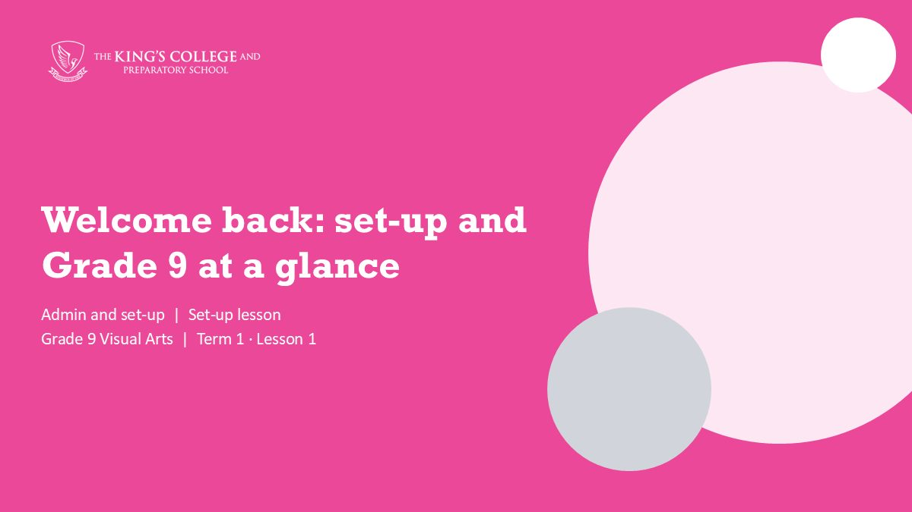

Term 1 · Lesson 1 · Theory lesson
Welcome back: elements, principles and vocabulary
Start here
Today I will
- Recall the seven elements of art
- Name the principles of design and spot them in artworks
- Know what Grade 9 builds towards
You made a full Starry Night study last year. Which art words did you need to talk about it?
Words to know
- Elements of art
- The building blocks of every artwork: line, shape, form, value (tone), colour, texture and space.
- Principles of design
- The ways artists arrange the elements to make an artwork work as a whole.
- Visual journal
- Your sourcebook for exercises, notes, research and ideas.
- Emphasis
- Making one part stand out so the eye goes there first.
- Unity and harmony
- When all the parts of an artwork belong together and feel complete.
- Contrast
- Strong differences, such as light and dark or rough and smooth, placed side by side.
Slides

Notes
Quick refresher of the elements and principles using the vocabulary booklet; what Grade 9 builds towards (Grade 10 Visual Arts).
The elements: what an artwork is built with
- Line and shape: Marks made by a moving point; flat areas that are geometric or organic.
- Form: Shapes with height, width and depth, or the illusion of them through shading.
- Value (tone): How light or dark something is.
- Colour: Hue, warm and cool, tints and shades, complementary pairs.
- Texture: Actual texture you can feel, or implied texture that is only drawn.
- Space: Positive and negative space; foreground, middle ground and background.
The principles: how the elements are arranged
- Unity / harmony and balance: Parts that belong together; visual weight spread evenly or unevenly on purpose.
- Rhythm / movement and direction: The path the eye travels; repeated marks that create a beat.
- Contrast, dominance and emphasis: Differences that make one area stand out and lead the eye.
- Focal point: The main area of interest that the eye goes to first.
- Pattern / repetition: Elements repeated in a planned way.
- Depth and perspective: Ways to show near and far on a flat surface.
Elements are the ingredients; principles are the recipe.
God filled Bezalel with skill 'to make artistic designs'. What does it mean that creativity can be a gift from God?
Practical
You need: Relay cards, vocabulary booklet, journal
Elements-and-principles relay, then a new journal section
- Round 1: one runner at a time matches an element or principle name to its definition on the board.
- Round 2: match each name to an artwork detail that shows it.
- Round 3: the team writes one sentence using a principle as evidence, for example 'The red cloak is the focal point because…'.
- Fastest correct team wins the round; the teacher checks every match.
- Journal: start a new Grade 9 section with a title page and your name in contour lettering.
- Write the seven elements on one page and the principles on the facing page.
Test yourself
- Name the seven elements of art.
- What is the difference between an element and a principle?
- Which principle is about making one part stand out?
Show answers
1. Line, shape, form, value (tone), colour, texture and space. 2. Elements are the building blocks; principles are the ways the building blocks are arranged. 3. Emphasis (also dominance or the focal point).
Finished early?
Find the building blocks and the recipe in an artwork from your vocabulary booklet.
- Choose any artwork printed in your vocabulary booklet.
- In your VJ, list three elements you can see and write where each one is.
- Name one principle the artist used and write one sentence of evidence, for example 'The bright face is the focal point because…'.
- Challenge: add a quick thumbnail of the artwork and label the focal point.